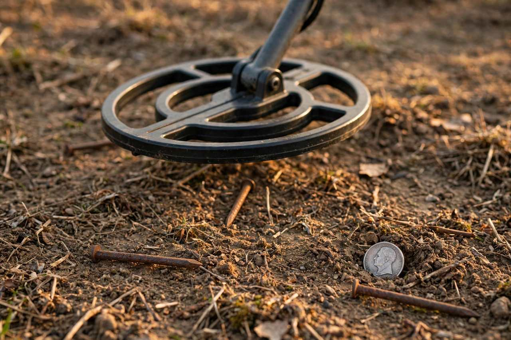

Target masking and recovery speed explained: why good targets hide next to iron

Masking is what happens when a strong or disruptive target prevents a detector from registering a smaller or weaker target nearby. Iron masking is the common form: a nail's signal drowns out the coin lying close beside it, and the hunter walks over a good target hearing either iron, a muddled blend, or nothing at all. It is one of the main reasons ground that has been hunted for years still gives up finds. Three beginner mistakes feed on this one phenomenon: trusting silence as proof that nothing is there, setting recovery speed to maximum everywhere and leaving it, and copying a recovery number from a video made with a different brand of machine. This article explains masking in its two shapes, what recovery speed actually changes, the order in which the helpful adjustments should be tried, and a nail and coin test that replaces copied numbers with evidence from your own detector.
The two shapes of masking
Side by side. A nail and a coin lie at similar depth, close together, and both enter the coil's field during one sweep. The detector has to resolve two overlapping responses at once. The iron response is often the stronger or earlier one, and it can dominate long enough that the coin never gets reported as itself. What reaches your ears is an iron grunt, a broken blend, or a number that belongs to neither object. This is the shape recovery speed can help with, because the problem is partly one of timing: the machine is still busy with the first target when the second arrives.
Stacked. One target lies above the other, and this shape is worse, because it can produce silence. The clearest documentation is Thomas Dankowski's test garden work, published in Western and Eastern Treasures in March 2000 and still the standard reference on the subject. A slightly rusted staple, a nearly weightless piece of iron, was buried one inch deep directly over a dime at eight and a half inches. The detector signalled iron and the dime was masked. Then the staple was reburied three inches deep over the same dime, and the detector went silent. The staple was now too deep to produce its own audio response, yet it still disrupted the dime's signal on the way down and back. The same silence held with the staple at four, five, and six inches. Only when the staple was moved four and a half inches off centre did the dime read at all, and then it read as a pull tab, in one sweep direction only.
Two lessons from that experiment belong in every beginner's head. First, no detector sees through iron; the iron disrupts the electromagnetic signal whether or not the machine reports it. Discriminating iron out removes the audio, not the disruption. Second, silence over a spot is not proof the spot is empty. In iron littered ground, silence can be a masked target's signature rather than an absence.
What recovery speed actually changes
Recovery speed is how quickly a detector finishes reporting one target and is ready to report the next. Raise it, and closely spaced targets become easier to hear as distinct objects, because each response is processed and cleared faster. A nail that would otherwise dominate the response for the whole sweep gets a shorter turn, and a coin's brief response can fit in beside it. Lower it, and each response runs longer, which under the right conditions gives weak or deeper targets a fuller, more noticeable signal.
That is the whole trade, and it is a trade, not an upgrade. Very fast processing shortens audio responses, and on some machines it reduces the prominence of deep, weak targets. Slow processing keeps deep signals comfortable and blends close targets together. The useful setting is the one that matches the density of targets under the coil: faster where adjacent targets are the problem, slower where the ground is clean and depth is the problem. XP calls the same control Reactivity, which is your first warning that the numbers do not travel. A recovery value on one brand cannot be compared directly with a value on another, and even within one brand the ranges differ: Minelab's Equinox manual lists recovery speed from 1 to 3 on the 600 model and from 1 to 8 on the 800. A setting of 5 copied from an 800 video does not exist on a 600, and means nothing portable on an XP or a Nokta.
The settings and habits that help, in the order to try them
| Step | Adjustment | What it does about masking |
|---|---|---|
| 1 | Slow down and shorten the sweep | Gives the machine fewer targets at once; if recovery is raised, DetectorGear's guidance is explicit that the sweep must slow and shorten with it, or the coil floods the processor anyway |
| 2 | Sweep the same spot from another direction | Changes which target the coil meets first; a coin barely detectable from one angle because of a nearby nail can read clearly from another |
| 3 | Raise recovery speed one step, then re-scan the same patch | Shortens the iron response so a neighbouring non-ferrous response can separate; one step at a time, same coil height and direction, so the comparison is honest |
| 4 | Reduce discrimination on doubtful signals | Heavy discrimination makes a mixed target beside iron even harder to hear; hearing the iron is information, not failure |
| 5 | Fit a smaller coil, if you have one | A smaller coil examines a more compact area at once, so fewer targets share the field; electronics cannot fully undo what a large coil sees |
Notice what is not on the list: sensitivity heroics and a magic number. Masking is a separation problem, not a power problem, and turning everything up makes the blend louder without unblending it.
The nail and coin test: learn your own machine in twenty minutes
This test needs a nail, a coin, a ruler, and a patch of clean ground or a board outdoors, away from buried metal and interference. It teaches more than any settings chart, because every result in it comes from your detector, your coil, and your ears.
- Set the baseline. Place the coin alone on the ground. Sweep it at your normal height and speed and note the tone and number. Success at this step is a clean, repeatable coin response from both sweep directions.
- Add the nail beside the coin. Lay the nail four inches from the coin, at the same level. Sweep across both, in line, from each direction. Note whether you hear one target, two, or a blend, and what the display claims.
- Close the gap in stages. Move the nail to two inches from the coin, then one inch, sweeping from both directions at each spacing. Write down the spacing where the coin stops being separately identifiable. That distance is your current setup's honest separation limit.
- Change one variable. Raise recovery speed by one step. Change nothing else: same coil height, same sweep speed, same direction. Repeat the spacings and note whether the coin separates at a closer distance than before.
- Test the cost. Move the nail away and sweep the coin alone again at the new setting, then at your original setting. Listen to the coin's response length. If the faster setting makes the lone coin's response noticeably shorter and easier to miss, you have felt the trade the articles describe.
- Test the angle. Put the nail back at the closest spacing and sweep the pair from a direction ninety degrees to your first passes. A coin that appears from the new angle, and not the old one, has just demonstrated why direction is step 2 in the field table.
What success looks like: a written set of spacings, before and after one recovery step, plus a note of what the faster setting cost the lone coin. That page of notes is worth more than any downloaded settings sheet, because it was measured on the machine you actually hunt with.
Reading your test results
If the coin separated at a wider spacing after the recovery step and the lone coin still sounded solid, your iron sites want that higher setting, paired with the slower, shorter sweep. If separation barely improved but the lone coin went thin and clipped, your ground is not dense enough to pay the cost, and the middle of the range is your honest setting. If nothing separated the pair at any setting until the sweep direction changed, your masking problem is geometry more than processing, and direction changes plus a smaller coil will do more for you than the recovery menu. Each result points at a different fix, which is the entire reason for testing instead of copying.
The limits no setting removes
Recovery speed addresses the side by side shape of masking. The stacked shape answers to no setting: a coin directly under iron can stay silent at every recovery value, exactly as the staple experiment showed, and the only counters are approaching from other angles, removing iron you have dug and re-scanning the hole, and accepting that some targets are hidden until the iron above them is gone. Depth adds its own limit, since target identification grows less reliable as signals weaken, and a coin on edge presents less conductive area than a coin lying flat, which weakens and destabilises its response near iron. None of this is a reason for despair about hunted out parks. It is the opposite. Masking is why those parks still hold coins, and the hunters who recover them are the ones who slow down, test their own machines, and treat a doubtful grunt beside iron as a question worth one careful dig.
— Tom Reilly, Home & DIY Writer
Sources, accessed November 20, 2026: Detect Metal Detectors knowledge centre, "Recovery Speed and Discrimination Guide" (recovery definition, Reactivity naming, cross-brand comparison warning, smaller coil, sweep direction); DetectorGear, "Recovery Speed Explained" and "Why Good Targets Sound Like Iron" (tradeoffs, sweep pairing, one variable testing, orientation and depth effects); Thomas Dankowski, "Beneath the Mask," Western and Eastern Treasures, March 2000, via detectorstuff.com (staple and dime test garden, silent masking); Minelab Equinox 600 and 800 getting started guide (recovery speed ranges 1 to 3 and 1 to 8); Detectorist World glossary (masking definition). Settings are general information; your machine's manual governs its own ranges and names.